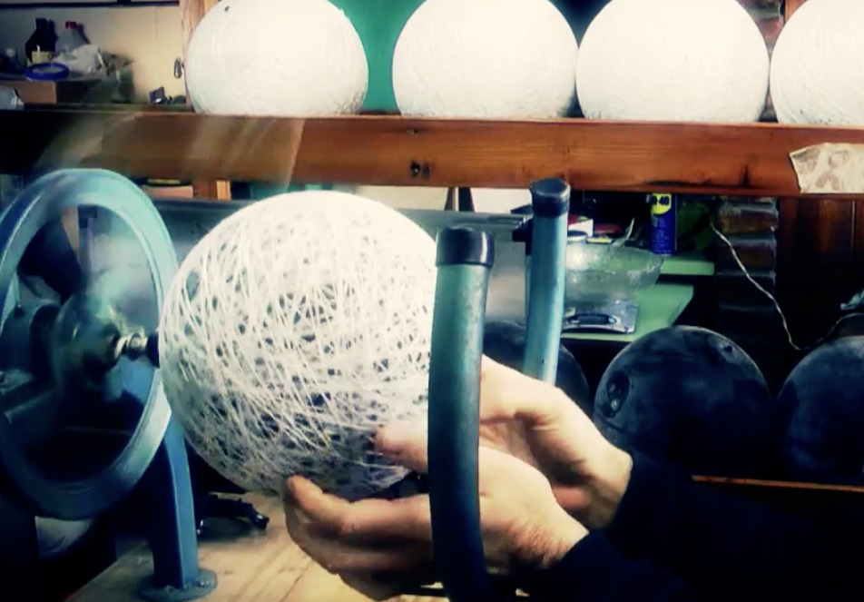
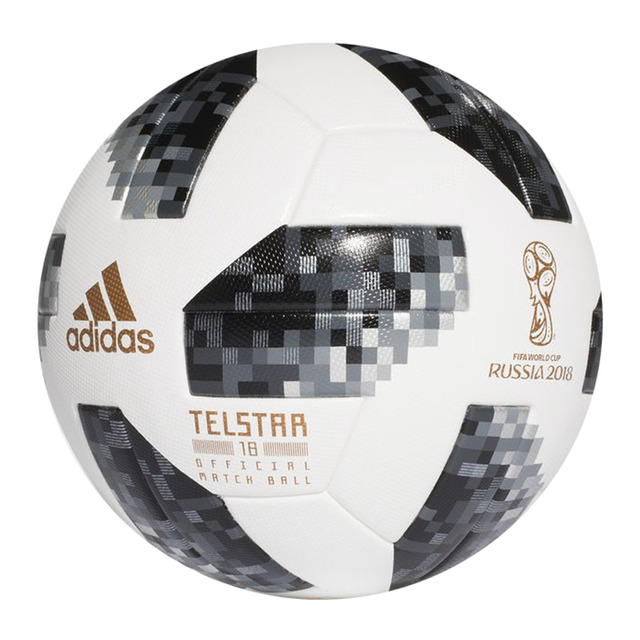

¿De que esta hecho acualmente un balon?
El cuero sintetico esta hecho de poliuretano o algun otro material sintetico de alto grado.
Los balones de alta calidad estan cosidos, en lugar de estar pegados o moldeados, y la costura se realiza a mano. Varias capas de revestimiento de poliester o de algodon se colocan entre la cubierta y la camara. La camara puede estar hecha de latex o butilo, y su funcion es mantener el aire del balon

La valvula de aire se hace de butilo o de silicona, que retiene mejor el aire por mayor cantidad de tiempo. Esta pelota funciona sistematicamente en todas las superficies naturales y artificiales, y en todos los climas, segun Soccer Ball World (El sitio web Soccer Ball World identifica balones profesionales de futbol, pelotas de practica, pelotas para juegos interiores y pelotas de futbol de sala. Cada una esta construida de manera diferente)
Las pelotas de futbol profesional deben ser aprobadas por la Federacion Internacional de Futbol Asociado (FIFA). Para obtener la aprobacion, estas pelotas tienen que tener cuatro partes principales: cubierta, forro, costuras y camara.
